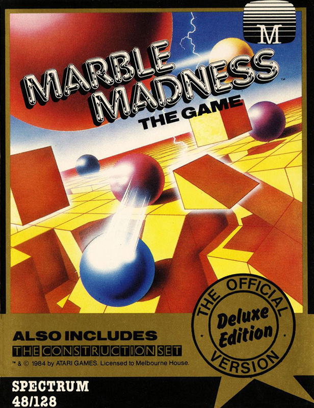
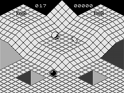

Marble Madness


{kind=link}

| Publisher: | Melbourne House |
| Price: | £14.95 |
| Year: | 1987 |
| Source: | Your Sinclair, Issue 17 |
Marble Madness the Game did not receive a review in CRASH, it does not even get a mention at all in the entire run of the magazine, only the Construction Set got a review. We do however have this from Your Sinclair issue 17.

Phil: Yes, it's finally here! The coin-op conversion you'd sell your granny and all her goods and chattels to own! The arcade game that had them rolling in the aisles. Having released the MM Construction Set last year. Melbourne House has now gone rolling ahead with a full implementation of the original game itself, in a special gold trimmed pack, marked "The Official Version — Deluxe Edition". On the reverse of the tape is a new improved version of the Construction Set editor program.
Marble Madness was always an arcade favourite, (still is at some venues) and the clinical condition. Marble Madness Queueing Syndrome ranks up there in the British Medical Association's hi-score table with Asteroid Wrist or Defender Thumb. For those of you who never saw it in the flesh, here's a brief rolldown of this wholly spherical scenario.
You are a heavy metal ball (Whooorrr Deep Purple Kerannnggg!) whose task in life is to roll around the 3D platforms of a far distant planet. En route to your escape, you encounter all manner of villains. fiendish badlets, and cruel blobby things... Brr! Not to mention (well don't then. Ed) the black balls, brooms and spinning hoops. . . oh yeah, there's a bit of oil around the place too, The Ed must have been fixing her car on this planet a while ago!
This is all very well, but how does it play? Very nicely thank you. Which is quite surprising. 'cos there's a tremendous array of baddies doing their stuff (eurr!) on screen at the same time as your little bearing, so the Speccy's doing a lot at a high speed too! The play of the game's true to its arcadian daddy, with all the humps and bumps faithfully reproduced. The programmer must've been a real fan to do it this well!
The graphics aren't in colour though 'cos something had to go, and the richly soaked colours lost out. Ah well, you know what they say, 'You can't make an omelette without breaking the space time continuum' And sure enough, the continuum in this case is monocoloured, that's to say. it's one colour all over, with black or blue lines on it. It doesn't detract from your enjoyment too much, because the game is complete in all other respects, and you spend too much time voiding the baddies to worry much what colour they are, I lurve it to bits. The ghosts of the martian marble can finally be laid to rest.
| Graphics: | 8/10 |
| Playability: | 8/10 |
| Value for Money: | 7/10 |
| Addictiveness: | 8/10 |